Trending Color palettes for Weddings, Birthday and other Event Celebrations
2026 Trending Palettes Florals and Decorations for Every Events
Butter Yellow & Ivory
Soft Sunshine Elegance
Butter Yellow and ivory bouquets are one of 2026's most loved wedding trends, celebrated for their warm, romantic and effortlessly luxurious appeal.
This palette brings together sunshine-inspired yellow tones with timeles ivory blooms to create floral arrangements that feel fresh, joyful, and refined.
Yellow roses, ivory garden roses, orchids, and delicate greenery combine beautifully for bouquets, floral arches, aisle décor and reception centerpieces.
The softness of butter yellow adds a modern twist to classic wedding florals, while ivory keeps the overall look elegant and sophisticated.
This trend is especially popular for spring weddings, outdoor garden ceremonies and destination celebrations because it feels light, airy and naturally graceful.
Couples love this palette for the way it creates a cheerful yet luxurious wedding atmosphere.
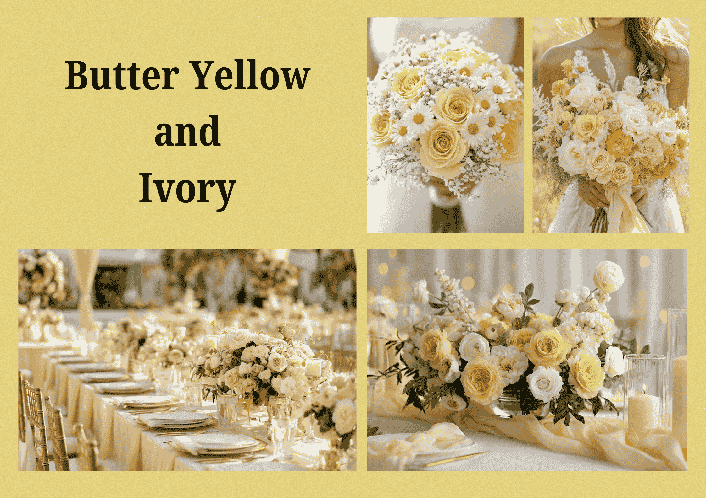
Mocha Mousse, Cream & Burgundy
Earthy Luxury in Bloom
Warm mocha tones paired with cream and rich burgundy create one of 2026's most sophisticated wedding bouquet trends.
This palette captures the growing love for earthy luxury and the “old money” aesthetic, blending depth, romance and timeless elegance.
Mocha toned roses, creamy blooms and deep burgundy florals create dramatic yet refined bouquets with rich visual texture.
These colors look stunning in classic ballroom weddings, rustic venues and luxury floral installations.
What makes this trend stand out is its balance of warmth and richness. Cream softens the darker shades, mocha adds earthy sophistication, and burgundy introduces romantic drama.
Together they create floral styling that feels premium, artistic and unforgettable.
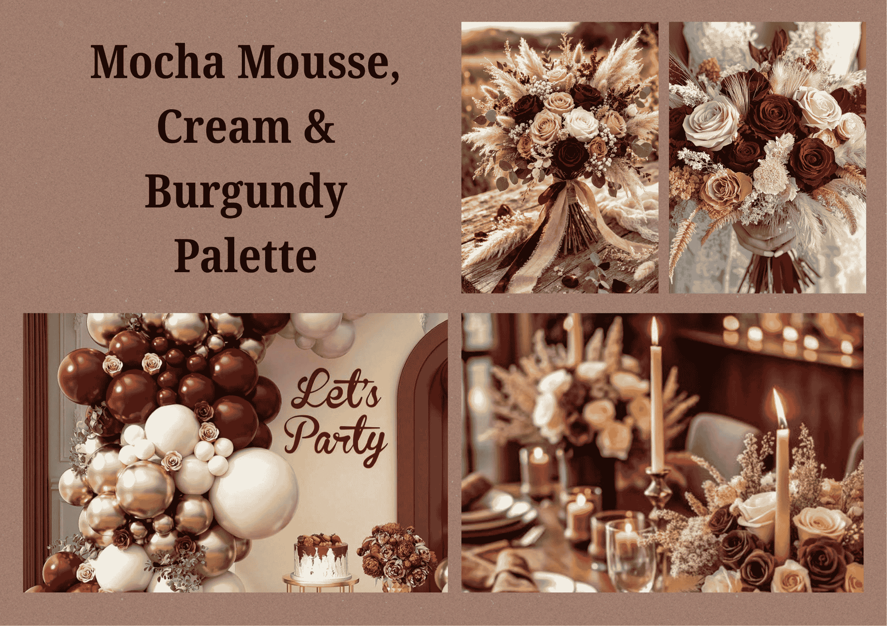
Powder Pink & Soft Blush
Timeless Romantic Florals
Powder pink and soft blush bouquets continue to charm brides with their delicate feminine beauty.
This palette remains a favorite in 2026 because it blends timeless romance with a modern soft luxury aesthetic.
Featuring blush roses, pastel peonies and airy fillers, these dreamy tones create graceful bouquets that feel elegant, gentle and effortlessly romantic.
They work beautifully for bridal bouquets, sweetheart table florals and ceremony décor.
Brides love this palette because it photographs beautifully and adds softness to every wedding setting.
Whether used in classic weddings or modern luxury celebrations, powder pink and blush always create an enchanting bridal atmosphere.
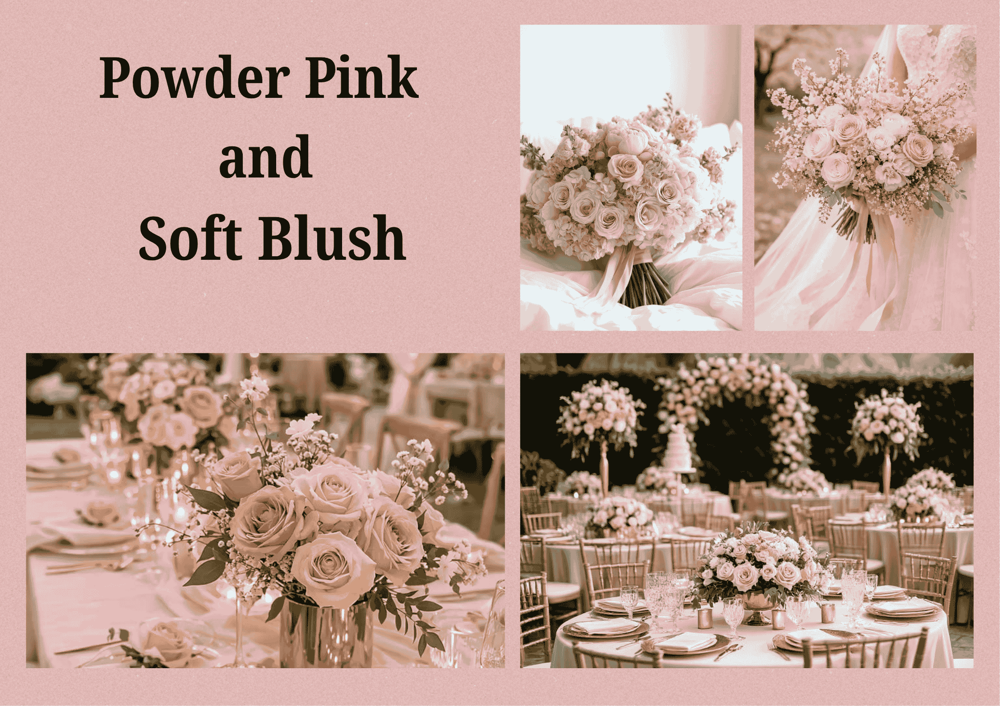
Cherry Red & Burgundy
Bold Romance Statement
For couples who love dramatic florals, cherry red and burgundy bouquets are one of 2026's standout trends.
Rich tones, velvety petals and deep romantic shades create bold arrangements filled with passion and luxury.
Cherry red roses paired with burgundy blooms make striking statement bouquets, luxurious floral arches and rich reception décor.
This palette is ideal for evening weddings, glamorous celebrations and couples who want florals with strong visual impact.
The trend is rising because many modern weddings are embracing deeper, moodier color stories.
It feels romantic, powerful and sophisticated while bringing a high-end designer feel to floral styling.
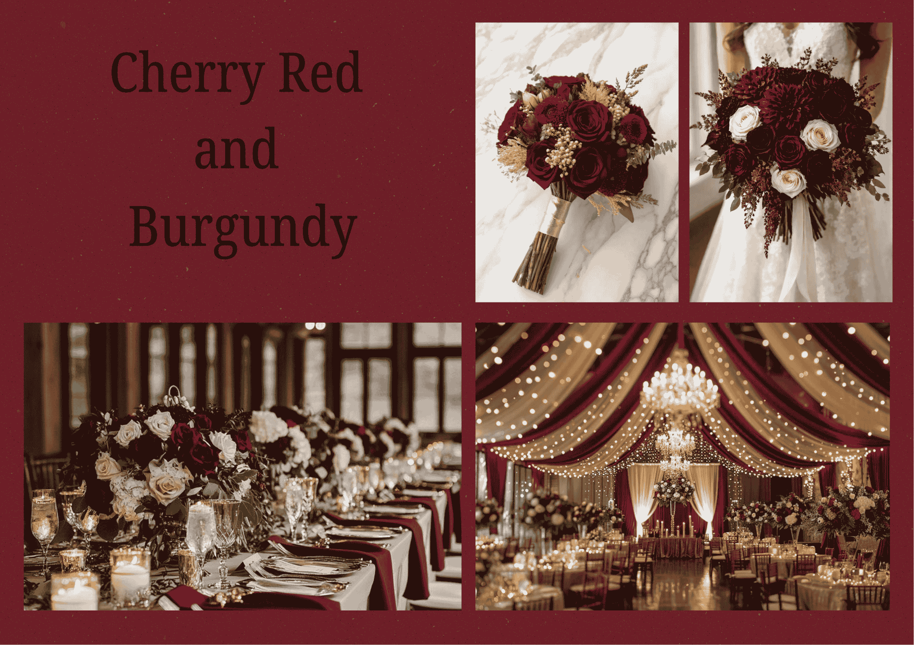
All White Monochrome
Classic Modern Sophistication
White-on-white bouquets remain timeless while continuing to trend in 2026 with a fresh minimalist approach.
This palette focuses on texture, layering and elegance rather than bold color, creating florals that feel effortlessly luxurious.
White roses, orchids, ranunculus and soft layered blooms create clean sophisticated bouquets perfect for modern weddings.
Monochrome white arrangements pair beautifully with almost any venue style — from grand traditional weddings to contemporary celebrations.
Couples love this palette because it never goes out of style. It feels pure, refined and premium while offering a modern editorial look that is especially popular in luxury wedding design.
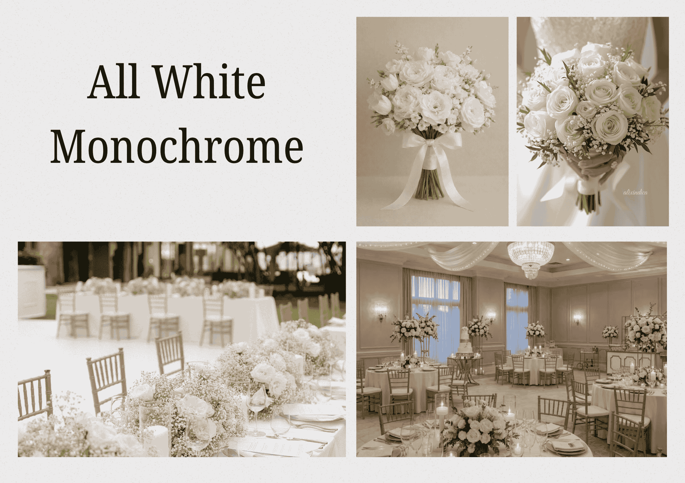
Terracotta, Peach & Nude
Warm Boho Wedding Vibes
Terracotta mixed with peach and nude tones brings a soft bohemian warmth to wedding bouquets and continues as a strong 2026 trend.
Inspired by earthy sunsets and nature-inspired celebrations, this palette feels organic, romantic and artistic.
Muted peach roses, terracotta toned blooms and nude florals create beautiful layered arrangements full of warmth and texture.
This palette is especially loved for outdoor weddings, rustic venues, desert-inspired themes and sunset ceremonies. Its popularity comes from the way it feels relaxed yet luxurious.
The earthy tones create a cozy, modern and fashion-forward floral style perfect for couples wanting something unique beyond traditional wedding palettes.
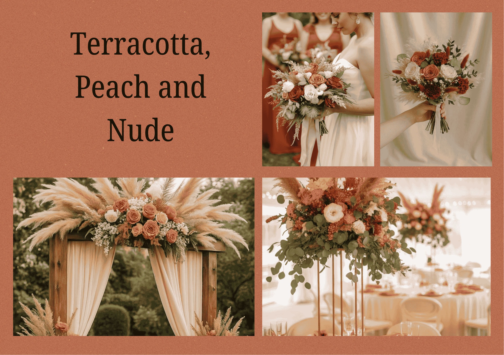
Hot Pink & Gold
Glam Celebration Vibes
Hot pink and gold is one of the most vibrant and energetic birthday color palettes trending in 2026.
This bold combination instantly adds a party feel and creates a luxurious, eye-catching setup.
Hot pink brings fun, excitement, and youthful energy, while gold adds a premium and glamorous touch.
Together, they create the perfect balance between playful and elegant décor.
This palette is ideal for milestone birthdays, women's celebrations, and stylish indoor party setups.
From balloon arches and flower arrangements to cake table decorations, hot pink and gold make everything look rich, festive, and Instagram-ready.
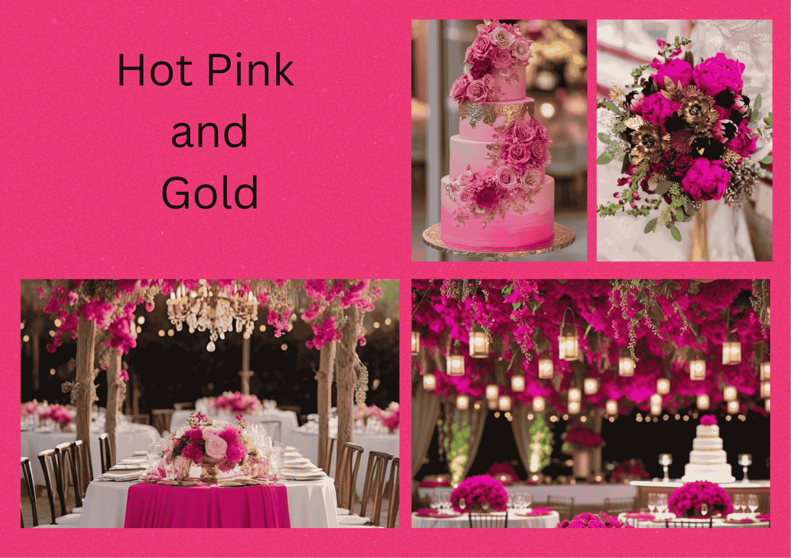
Lavender & Silver
Soft Elegant Celebration
Lavender and silver create a calm, classy and modern birthday theme that feels both elegant and refreshing.
This palette is perfect for those who prefer subtle beauty over bold colors.
Lavender adds a soft, soothing tone, while silver enhances the overall look with a touch of shine and sophistication.
Floral arrangements, table décor and backdrop designs in this palette feel dreamy and graceful.
This combination works beautifully for evening birthday parties, intimate celebrations, and aesthetic-themed events.
It gives a clean, stylish and slightly luxurious vibe without being too loud.
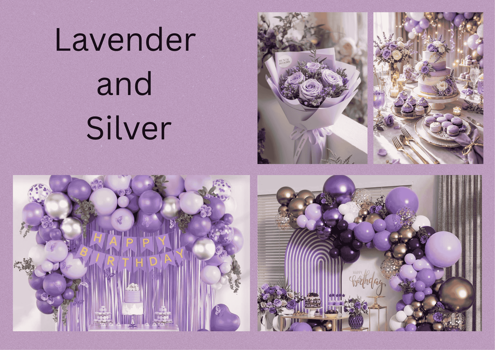
Pastel Rainbow
Playful Dreamy Theme
Pastel rainbow is one of the cutest and most creative birthday trends in 2026.
Featuring soft shades of pink, blue, yellow, mint and lilac, this palette creates a joyful and dreamy celebration atmosphere.
Unlike bright rainbow themes, pastel tones feel more aesthetic, modern and visually pleasing.
They are widely used in kids' birthday parties, baby celebrations and even trendy adult birthday themes.
From pastel balloons and floral decorations to cakes and photo backdrops, this palette creates a magical and cheerful vibe.
It is perfect for creating a fun, light-hearted celebration filled with color and happiness.
Sage Green & Beige
Natural Calm & Elegant Simplicity
Sage green and beige is one of the most loved soft color palettes for baby showers and anniversary celebrations in 2026.
This combination brings a calm, natural and soothing atmosphere that feels both modern and timeless.
Sage green adds a fresh, earthy tone while beige keeps the overall look warm and minimal.
Together, they create a balanced and elegant setup that is not too bright but still visually beautiful.
This palette is perfect for indoor décor, floral arrangements, balloon styling and table setups.
It works especially well for neutral-themed baby showers and intimate anniversary celebrations where simplicity and elegance matter the most.
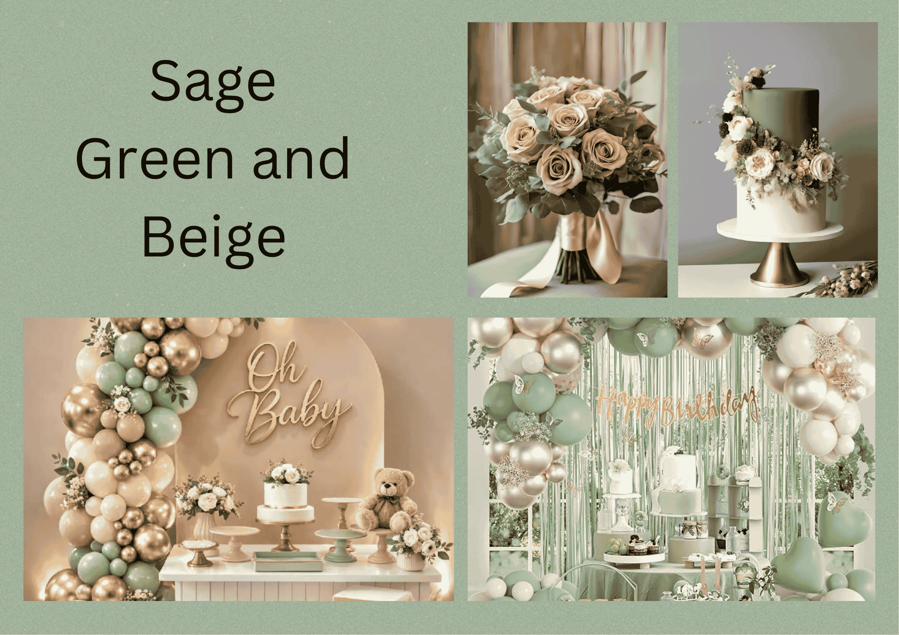
Peach & Mint
Fresh & Cheerful Celebration
Peach and mint create a light, refreshing and cheerful color palette that is perfect for joyful celebrations.
This combination feels soft yet lively, making it a popular choice in 2026.
Peach brings warmth and sweetness, while mint adds a cool, fresh contrast that brightens the entire setup.
Together, they create a welcoming and happy vibe that suits both baby showers and anniversaries.
This palette is widely used in floral decorations, dessert tables, and backdrop designs.
It is ideal for daytime events, garden setups and cozy family celebrations where a pleasant and uplifting atmosphere is desired.
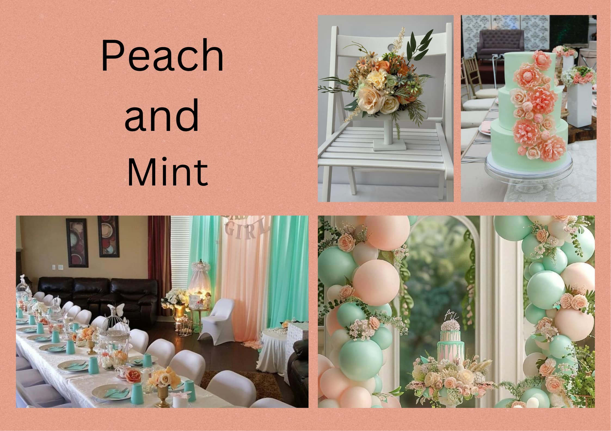
Lilac & Ivory
Soft Romantic Elegance
Lilac and ivory form a delicate and romantic color palette that adds a graceful charm to any celebration.
This combination is trending in 2026 for its soft, dreamy and elegant appearance.
Lilac introduces a gentle touch of color while ivory enhances the look with a clean and sophisticated finish.
Floral arrangements in this palette feel light, luxurious and beautifully balanced.
This color theme is perfect for anniversary dinners, baby showers and elegant indoor setups.
It creates a peaceful and refined environment, making every moment feel special and memorable.
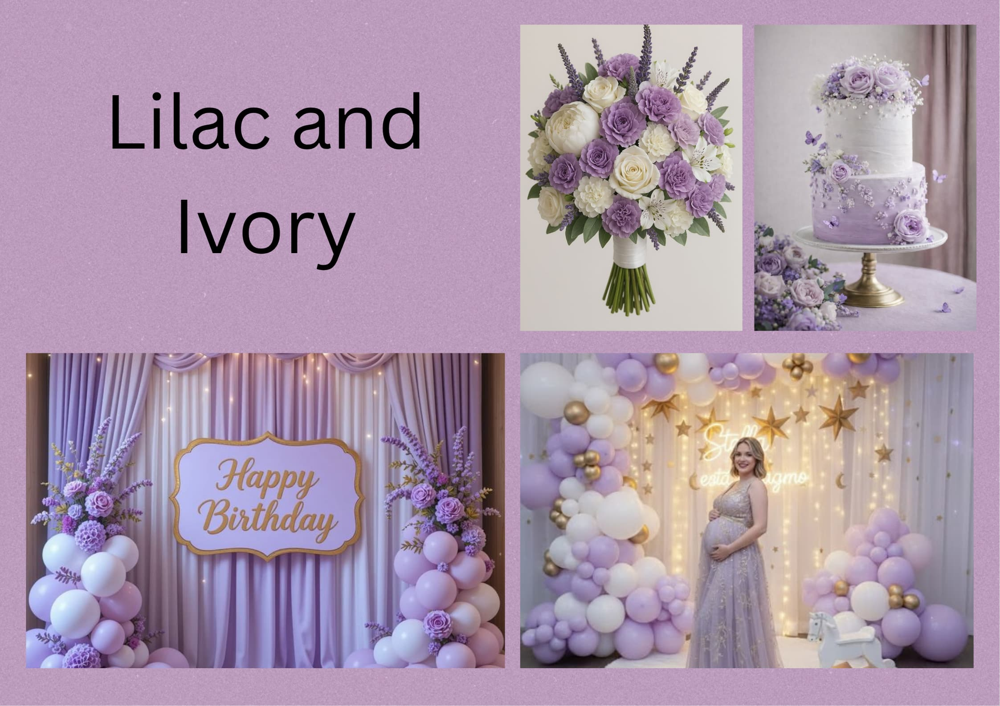
White & Green Minimal
Modern Clean & Professional Look
White and green is one of the most preferred floral color palettes for corporate events in 2026.
This combination represents freshness, clarity and professionalism, making it ideal for formal environments.
White flowers like roses, lilies and orchids paired with green foliage such as eucalyptus and ferns create a clean and minimal aesthetic.
The simplicity of this palette makes the décor look organized, elegant and non-distracting.
This theme is perfect for office events, product launches, conferences and business meetings.
It gives a refreshing and polished look while maintaining a calm and professional atmosphere.
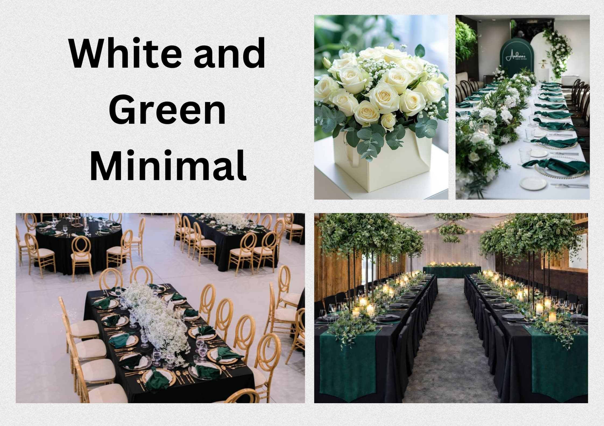
Blue & Silver Elegant
Premium Corporate Sophistication
Blue and silver create a refined and high-end look that is perfect for premium corporate events.
This palette is gaining popularity in 2026 for its cool, modern and luxurious appeal.
Blue tones bring trust, stability and confidence, while silver adds a sleek and polished finish.
Together, they create a sophisticated ambiance suitable for corporate dinners, award functions and formal celebrations.
Floral arrangements with blue orchids, hydrangeas and silver accents look especially elegant under lighting, making this palette ideal for evening corporate events and upscale venues.
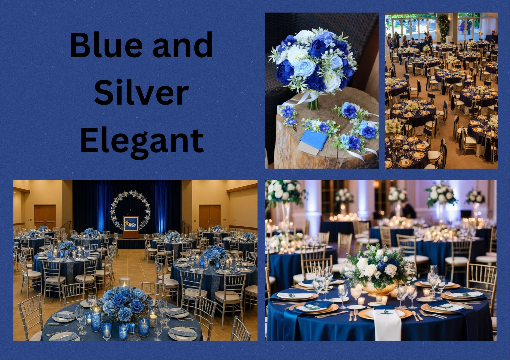
Neutral Luxury Tones
Understated Elegant Branding
Neutral tones like beige, champagne, ivory and soft browns are becoming a major trend in corporate floral décor.
These colors create a subtle yet luxurious look that aligns well with modern brand aesthetics.
Neutral palettes are versatile and blend seamlessly with different event themes and interiors.
Floral arrangements in these tones feel refined, calm and premium without being too bold or flashy.
This palette is perfect for luxury brand events, business networking spaces and high-end corporate setups.
It helps maintain a sophisticated environment while still adding warmth and visual appeal.
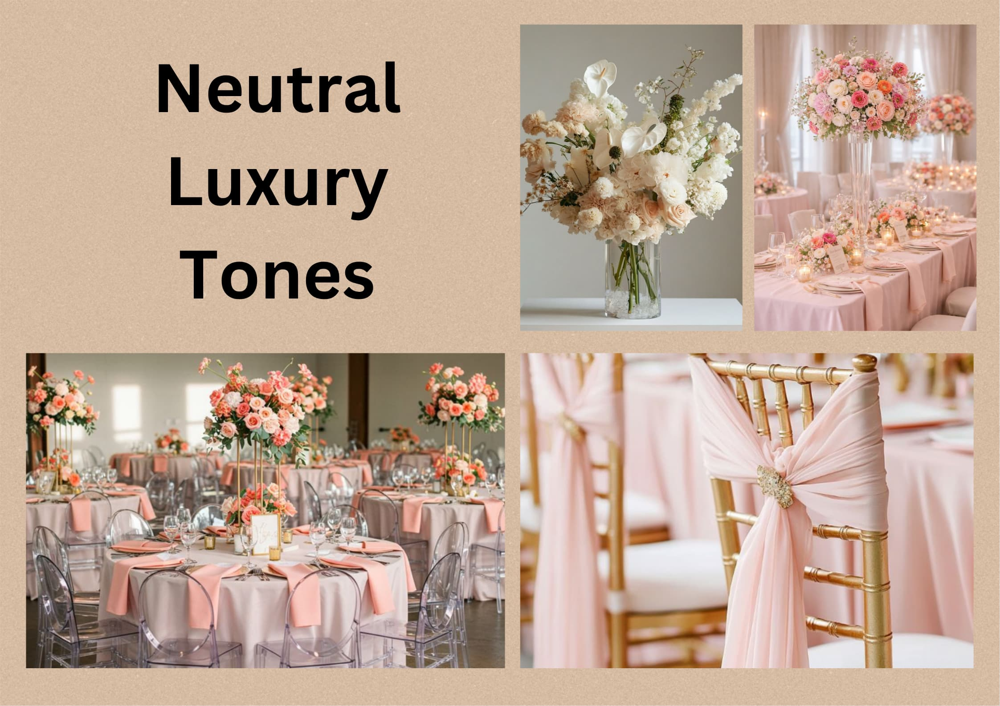
Recent Blogs
Rose Bouquet Trends
April 20, 2026
Latest elegant rose bouquet styles for gifting.
Wedding Flower Ideas
April 18, 2026
Beautiful floral arrangements for weddings.
How to Care Flowers
April 15, 2026
Simple tips to keep flowers fresh longer.
Romantic Rose Guide
April 12, 2026
Choose the perfect roses for special moments.
Birthday Bouquet Picks
April 10, 2026
Colorful bouquets perfect for birthdays.
Luxury Floral Designs
April 8, 2026
Premium floral arrangements with elegance.
Make Every Moment Special with Flowers
Explore our collection and find the perfect bouquet.